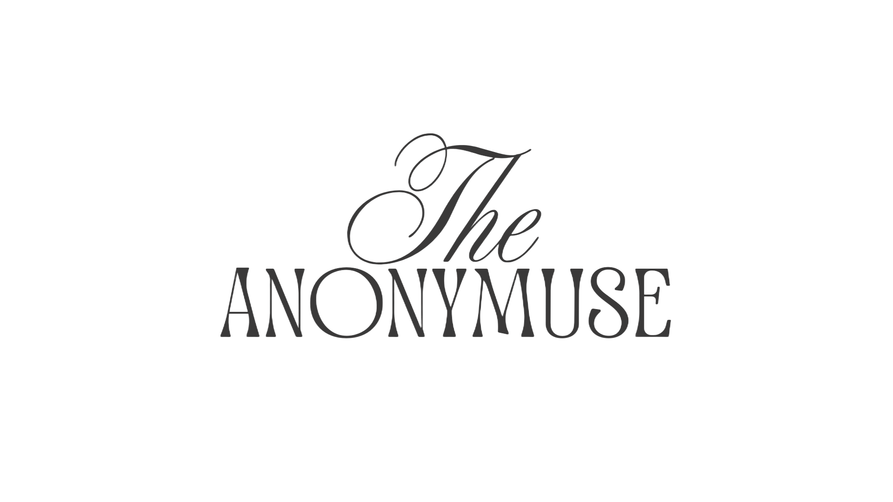

Muse;
to think deeply, a person who gives an artist creative ideas, or a Greek goddess of the arts.
Every artists have their own muse, and some of them are someone they think deeply or even for a long time. The Anonymuse are dedicated to everyone who have been picturing someone as their inspiration of art and wanted to share it as a message, anonymously.